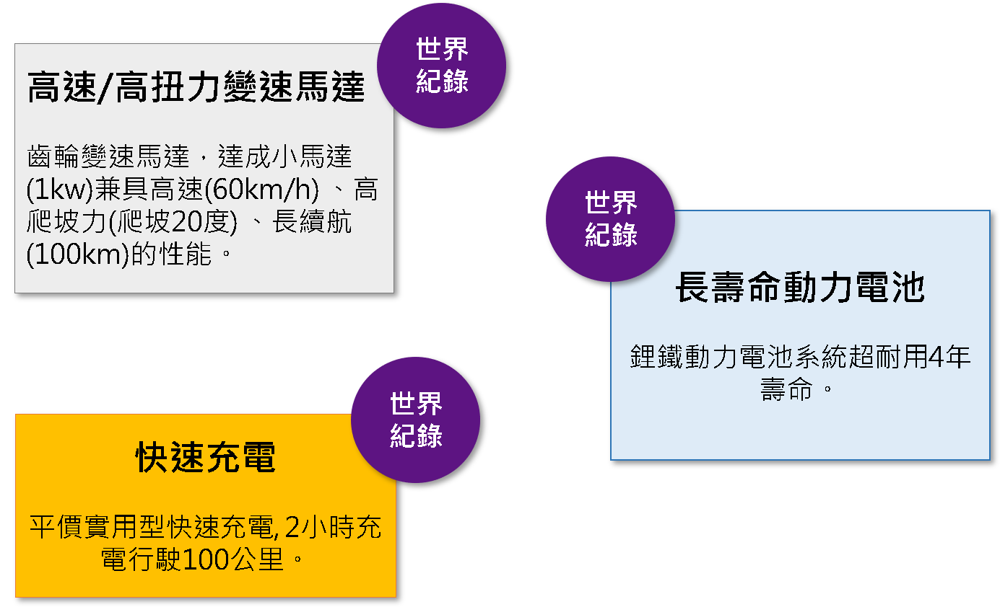
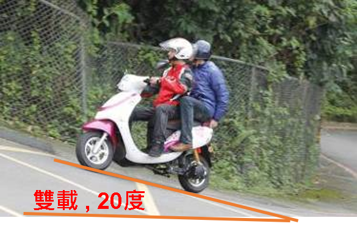
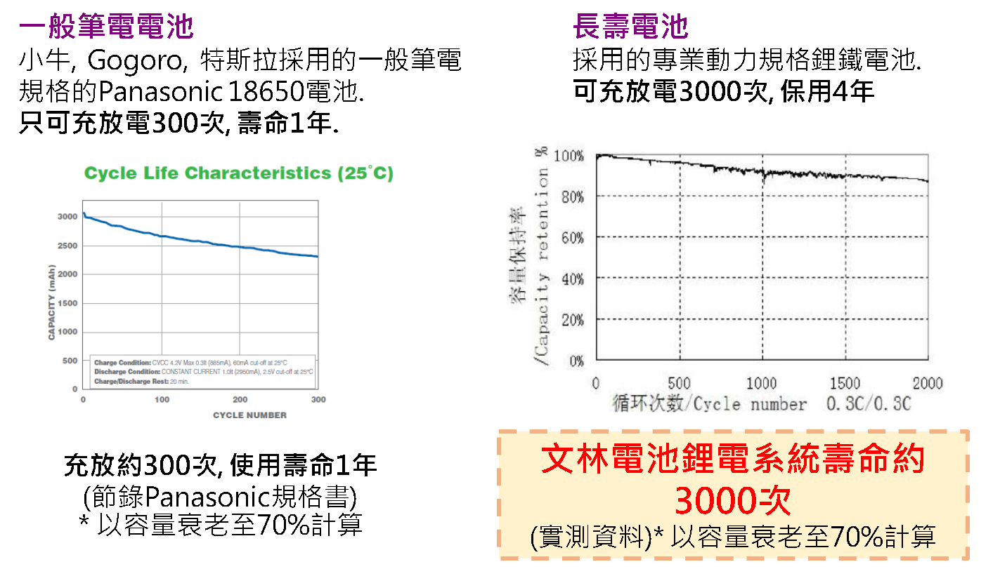
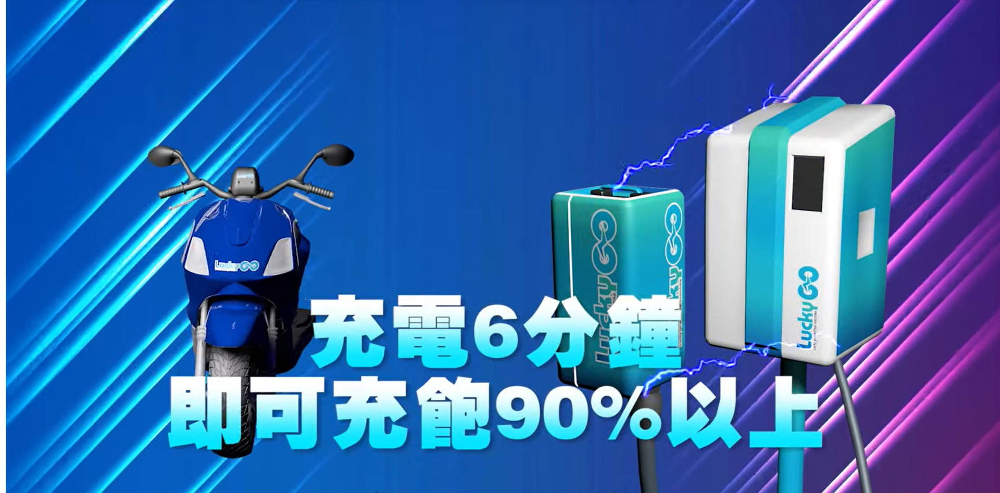
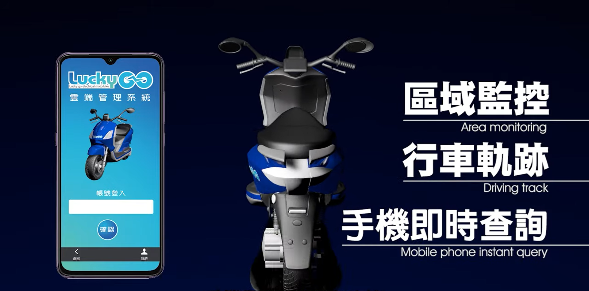
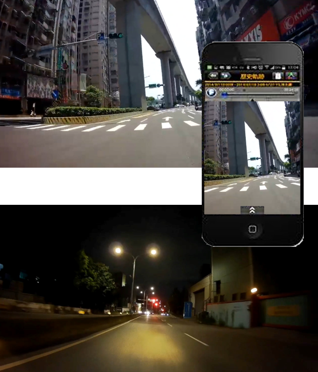
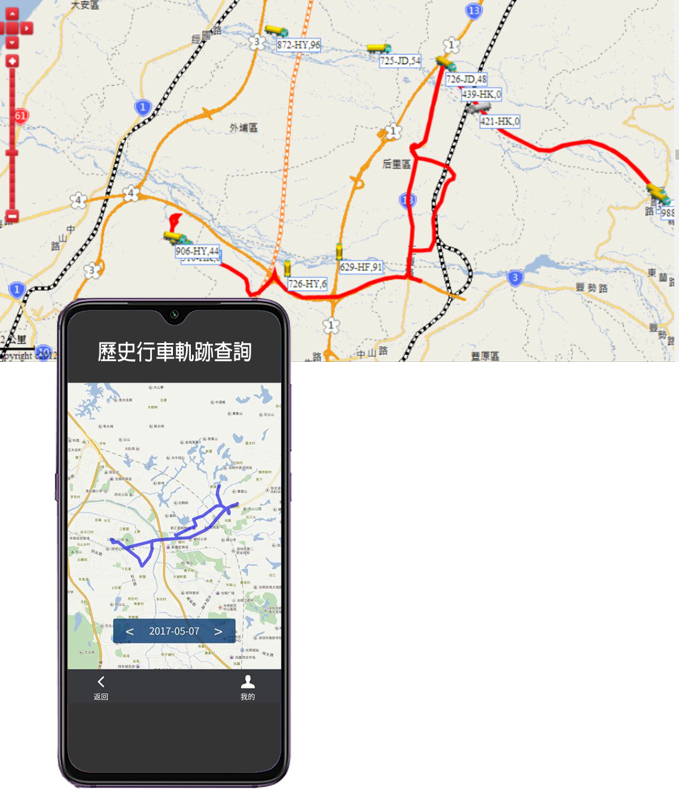
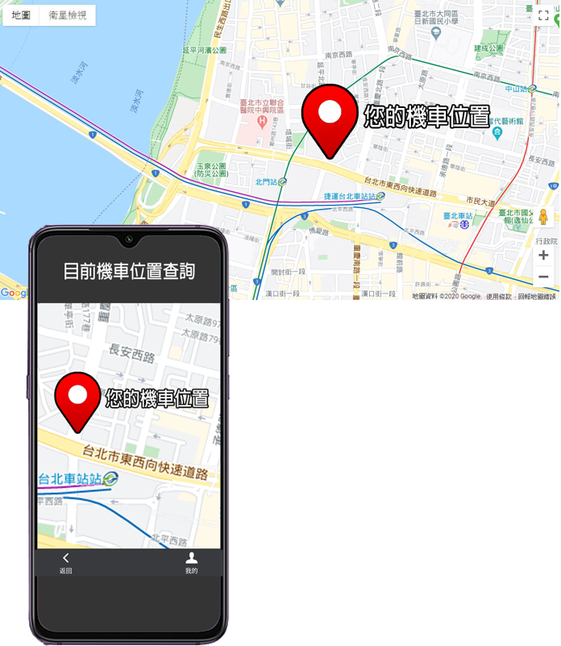

核心技術

高爬坡 長續航
獨家變速馬達系統, 高效率、高扭力輸出，超低耗電雙載爬坡20度以上 (陽明山仰德大道約10度)。



智慧電動車
5G/GPS與智慧手機連動 , 雲端管理 , 車輛不失竊.

區域監控、行車軌跡、手機即時查詢

區域監控
全程記錄行車影像，保障您的行車安全。
HD高畫質影像，無論日間、夜間皆能清楚記錄行車過程，旅程紀錄更完整

行車軌跡
5G/GPS衛星導航功能讓您可使用手機查詢您的行車軌跡路線，座標定位與地圖描繪功能。
完整記錄您的旅遊路線與行車規劃。

手機即時查詢
雲端管理系統讓您隨時查詢車輛的位置。
在機車失竊或是忘記您的愛車停放在何處，都可使用手機立即查詢車輛的停放地點，減少機車失竊的風險。